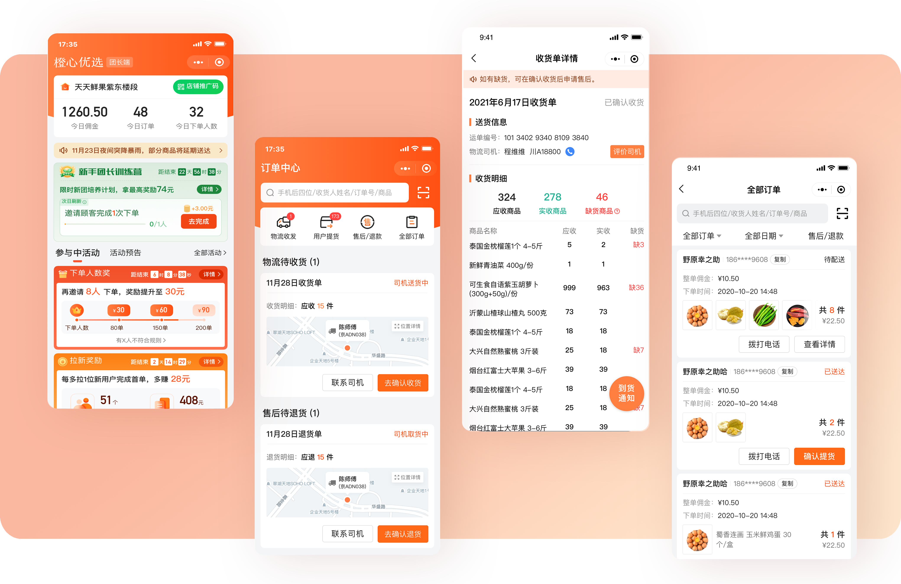
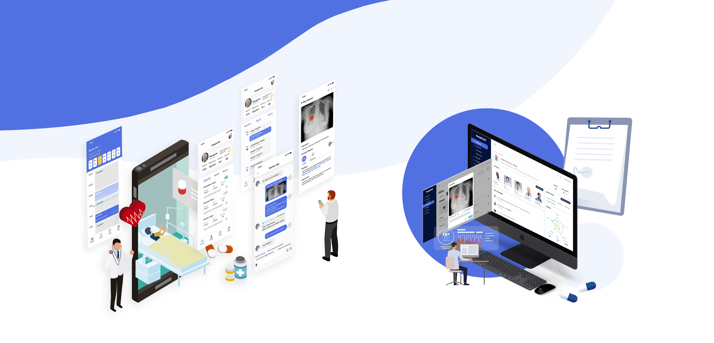
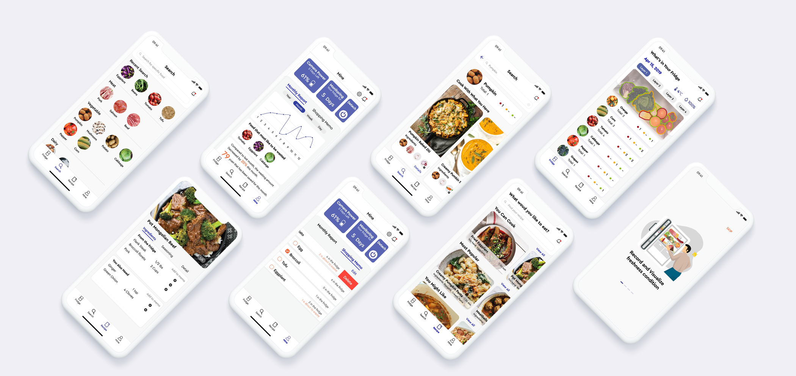
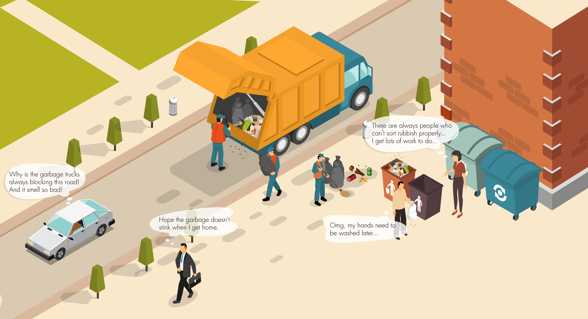

Currently, I'm a first-year MSI student at the University of Michigan,
focusing on UX Design & Data Analysis. Previously, I worked for one year
as a product manager and designer at DiDi. Past experiences have allowed me to develop systematic and user-centered thinking to any problem I encounter.

DiDi | Online Group Purchasing Experience
Redesigning the workflow of Arrival Notice for the application on the group leaders' side

HospiLink | Design Workshop
Building a closer relationship between the patients' family and doctors

Freedge | Food Management
An applicaiton that helps keep track of the storage and freshness of food in your firdge.

Urban Waste Collection System Innovation
Renovating the waste recycling approach to the household waste